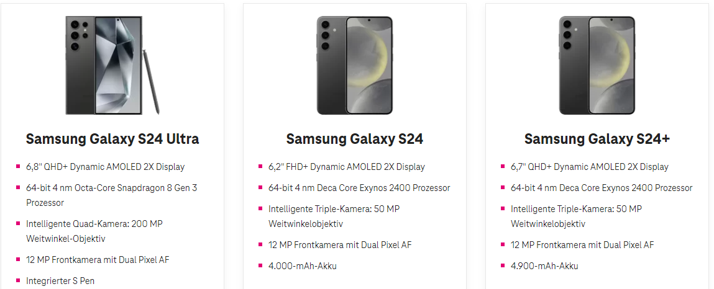
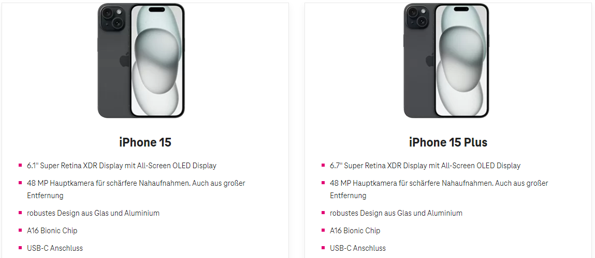

Hallo meine lieben,
Da ich mit Magenta wirklich extremst zufrieden bin vor allem mit meinen Vertrag und ich mich auf mein neues Handy freue Frage ich euch ob ich mein Tarif vorzeitig verlängern kann? Ich hab am Mai/April 2022 mein Handy + Tarif geholt und meine Frist ist bis 20 Februar. Kann man davor schon den Tarif verlängern? Kann man auch davor irgendwie das Guthaben einsehen was gutgeschrieben wird beim handykauf?
Am 9.2.2024 um 22:34 schrieb Adrian die geile Sau:
Hallo meine lieben,
Da ich mit Magenta wirklich extremst zufrieden bin vor allem mit meinen Vertrag und ich mich auf mein neues Handy freue Frage ich euch ob ich mein Tarif vorzeitig verlängern kann? Ich hab am Mai/April 2022 mein Handy + Tarif geholt und meine Frist ist bis 20 Februar. Kann man davor schon den Tarif verlängern? Kann man auch davor irgendwie das Guthaben einsehen was gutgeschrieben wird beim handykauf?
Hi laut meinen Information so war es früher halt geht es maximal 1 Monat früher aber dafür am besten beim Treue Team nachfragen
")
0800676712
LG
@Adrian die geile Sau
(welch ein Username
😉
),
@kilian3845
,
unter gewissen Voraussetzungen ist es sogar bis zu zwei Monate vorher möglich. Zu bedenken gilt hierbei nur, dass die restlichen Monate drangehängt werden.
Beispiel: 2 Monate Restbindung + 24 Monate neue Vertragsbindung = 26 Monate effektive Vertragsbindung.
Den Eintauschbonus für dein altes Handy kannst du >>
hier
<< in Erfahrung bringen.
Liebe Grüße, JD.


{kind=link}
{kind=link}